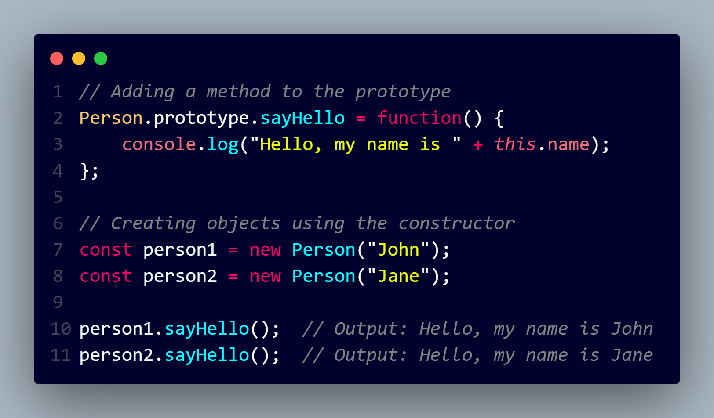

In JavaScript, prototypal inheritance is a key concept that allows objects to inherit properties and methods from other objects. Unlike classical inheritance found in some other programming languages, JavaScript uses a prototype chain to achieve inheritance.
Objects and Prototypes:
Every object in JavaScript has a prototype, which is another object from which it inherits properties.
The prototype is accessed through the __proto__ property or, in modern JavaScript, using the Object.getPrototypeOf() method.
Constructor Functions:
Constructor functions are used to create objects with a shared prototype.
When a new object is created using a constructor function with the new keyword, the prototype of the new object is set to the prototype property of the constructor function.
